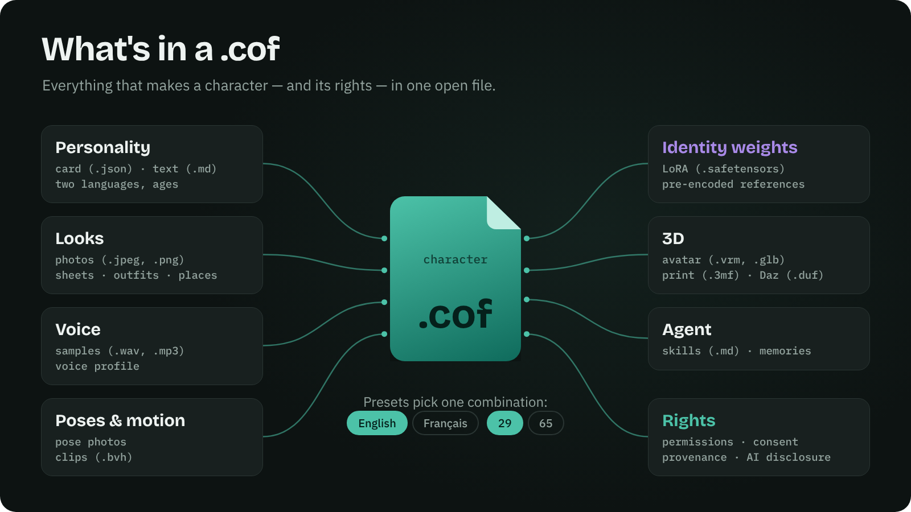
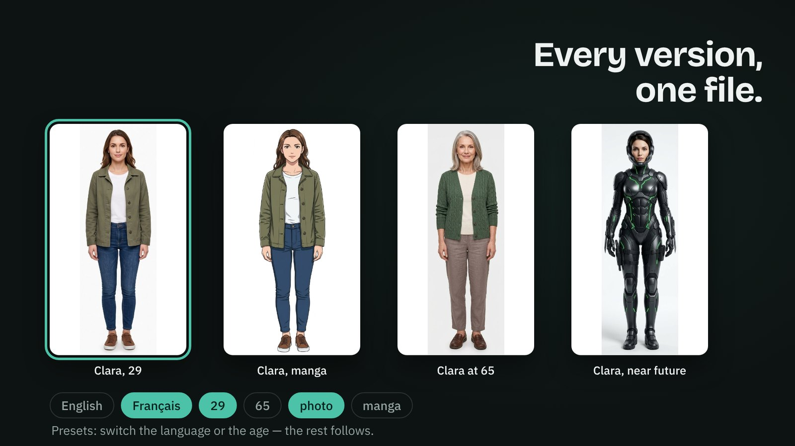

Character Open File
Des personnages IA complets dans un seul fichier ouvert — portables, avec leurs droits.
Des personnages IA complets dans un seul fichier ouvert — portables, avec leurs droits.
Un format de fichier ouvert qui réunit tout ce qui définit un personnage IA — personnalité, apparence, voix, 3D, mouvement, skills d'agent, souvenirs et une psyché — avec ses droits et son consentement intégrés. Le même fichier s'ouvre dans une application de conversation, un générateur d'images, ComfyUI, un moteur de jeu ou un agent.
Actuellement : 1.2.2, 15 novembre 2026 — le builder garde tout ce qu'il ne modélise pas, hôtes d'agent dans cof-cli (une mémoire, deux foyers), souvenirs non datés dans l'explorateur (notes). Avant : 1.2.1, 8 novembre — import Character.AI ; 1.2, 8 novembre — une psyché ; 1.1, 30 octobre — les souvenirs ; 1.0, 17 octobre. Tout fichier 1.x reste valide et lisible par tout outil 1.x.
Qu'est-ce qui tient dans le fichier ?
COF comparé, fonction par fonction, à Character Card V2 et V3 / .charx, au Markdown d'agent, à Letta Agent File, à MacPaw Portable Memory et à VRM — y compris pour ce que COF ne fait pas.
Sauvegardez vos bots Character.AI
COF 1.2.1 : votre personnage, et vos conversations comme ses souvenirs privés, dans un seul fichier ouvert — puis une apparence, une voix, des presets, une psyché. Tout se passe dans votre navigateur.
Les personnages IA ont désormais une vie intérieure
COF 1.2 : une psyché que l'on peut lire, modifier et emporter avec soi — chaque conviction reliée au souvenir qui l'a fait naître.
Combien de convictions font une personne ?
Ce que la psychologie a compté à la place, un simulateur pour tester vos propres chiffres, et ce que valent le Big Five, les types Myers-Briggs, l'Enneagram et l'astrologie.
Les personnages IA ont désormais des souvenirs
COF 1.1 : les moments et les périodes d'une vie, ce qu'ils ont fait ressentir, ce qu'ils gardent pour eux, ce qui s'efface.
Combien pourrait peser une vie ?
Combien de souvenirs une personne garde, combien d'octets ils occuperaient, et un calculateur pour tester les hypothèses.
Deux courts films réalisés pour la 1.2.2, avec de vrais fichiers et de vrais outils, sans mise en scène.
Une mémoire, deux foyers
Clara est exportée vers OpenClaw et répond à partir des souvenirs que porte son fichier. Quand on lui apprend quelque chose de nouveau, l'agent écrit une note ; cof memory add la ramène dans son fichier sous forme de souvenir vécu et personnel. Exportée vers Hermes, qui ne l'avait jamais rencontrée, elle se souvient du train de ce matin.
Qui elle est
Un personnage est plus qu'un prompt. Sa psyché — onze types de nœuds, chacun relié au souvenir, à la personne ou au lieu dont il vient — explorée, rejouée dans le temps, écrite dans le builder, puis transformée en SOUL.md que lit un agent.

Une archive ZIP avec un manifeste : l'identité du personnage, ses éléments en huit catégories — personnalité (une Character Card V3 à l'intérieur, une psyché, du texte libre), apparence, poids d'identité, 3D, voix, postures, mouvement, souvenirs —, une bibliothèque de fichiers d'agent, et ses droits. Presque tout est facultatif ; ce qui y entre est vérifié.

Un preset est une combinaison prête à l'emploi : une personnalité, une apparence, une voix, un âge. Changez de langue ou d'âge, et le reste suit.

Les moments et les périodes d'une vie, chacun avec quand, où, avec qui, ce qui a été ressenti alors et aujourd'hui, la netteté avec laquelle il revient, et ce que le personnage préférerait taire. Ce qu'il vit avec un utilisateur est réécrit dans le même fichier — et part avec lui. En savoir plus.

Valeurs, croyances, désirs, peurs, blessures, goûts et habitudes sous forme de graphe de nœuds courts, chacun avec une force, une durée et le souvenir dont il vient. Personnes, lieux et objets sont nommés une fois, partagés par souvenirs et psyché. En savoir plus.

Les permissions, le consentement lorsqu'une personne réelle est représentée, et la provenance font partie du fichier. Chaque preset déclare un âge ; nudité ou contenu intime avec un mineur rend un fichier invalide, pas seulement étiqueté.

Une distribution voyage ensemble, et chaque personnage garde sa propre apparence, sa voix, ses presets et ses droits.

Créez avec le builder, un agent IA ou un import ; utilisez-le dans l'explorateur, ComfyUI, les applications de conversation et les hôtes d'agent. cof validate vérifie les âges, les droits, les hashes et les scripts.

Builder
Déposez des photos, une carte et un échantillon de voix ; obtenez un .cof. Hors ligne, dans votre navigateur.

Explorateur
Ouvrez n'importe quel .cof : presets, apparences, voix, poses, souvenirs, psyché, droits. En lecture seule.
Déposez votre export CAI Tools ou PersonaText, vérifiez trois choses, téléchargez un seul .cof : votre personnage, et vos conversations comme ses souvenirs, gardés privés. Puis allez plus loin qu'une sauvegarde — une apparence, une voix, des presets, une psyché. Tout se passe dans votre navigateur. Sauvegarder vos personnages →
Un .cof contient une Character Card V3 valide et exporte une carte PNG ccv3, un JSON de carte, SOUL.md / IDENTITY.md, un espace de travail OpenClaw et un profil Hermes ; un avatar VRM à l'intérieur reste un simple fichier. Les outils existants n'ont rien à réécrire. Ce qui tient dans le fichier, comparé →
Spécification
Le texte normatif, en anglais et en français.
Implémenter COF
Lecture, écriture, droits, sécurité, conformité.
Exemples
Neuf personnages conformes, du texte seul à un fichier phare à douze presets.
Pour les agents IA
La skill cof-author : un agent crée et valide un .cof.
Feuille de route
Prochainement : un lecteur, la création assistée, une galerie de personnages de départ, un profil professionnel.
Journal des modifications
Chaque version, ce qui a changé et pourquoi.